Chapter Fifteen
Communication Systems
Communication Systems

Communication is the act of transmission of information. Every living creature in the world experiences the need to impart or receive information almost continuously with others in the surrounding world. For communication to be successful, it is essential that the sender and the receiver understand a common language. Man has constantly made endeavors to improve the quality of communication with other human beings. Languages and methods used in communication have kept evolving from prehistoric to modern times, to meet the growing demands in terms of speed and complexity of information. It would be worthwhile to look at the major milestones in events that promoted developments in communications, as presented in Table 15.1.
Modern communication has its roots in the 19th and 20th century in the work of scientists like J.C. Bose, F.B. Morse, G. Marconi and Alexander Graham Bell. The pace of development seems to have increased dramatically after the first half of the 20th century. We can hope to see many more accomplishments in the coming decades. The aim of this chapter is to introduce the concepts of communication, namely the mode of communication, the need for modulation, production and deduction of amplitude modulation.
Communication pervades all stages of life of all living creatures. Irrespective of its nature, every communication system has three essential elements- transmitter, medium/channel and receiver. The block diagram shown in Fig. 15.1 depicts the general form of a communication system.
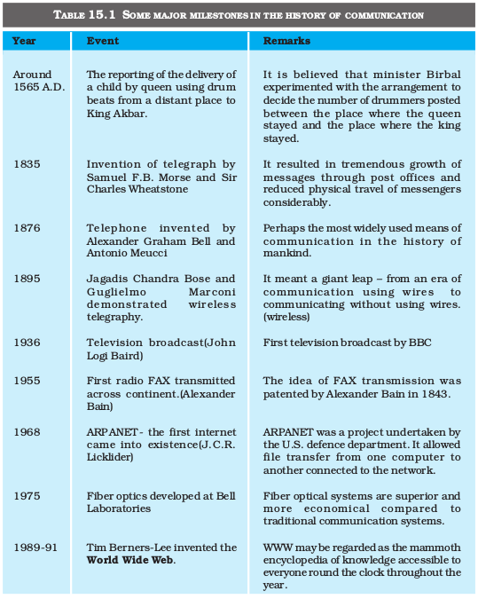
In a communication system, the transmitter is located at one place, the receiver is located at some other place (far or near) separate from the transmitter and the channel is the physical medium that connects them. Depending upon the type of communication system, a channel may be in the form of wires or cables connecting the transmitter and the receiver or it may be wireless. The purpose of the transmitter is to convert the message signal produced by the source of information into a form suitable for transmission through the channel. If the output of the information source is a non-electrical signal like a voice signal, a transducer converts it to electrical form before giving it as an input to the transmitter. When a transmitted signal propagates along the channel it may get distorted due to channel imperfection. Moreover, noise adds to the transmitted signal and the receiver receives a corrupted version of the transmitted signal. The receiver has the task of operating on the received signal. It reconstructs a recognisable form of the original message signal for delivering it to the user of information.
Figure 15.1 Block diagram of a generalised communication system.
There are two basic modes of communication: point-to-point and broadcast.
In point-to-point communication mode, communication takes place over a link between a single transmitter and a receiver. Telephony is an example of such a mode of communication. In contrast, in the broadcast mode, there are a large number of receivers corresponding to a single transmitter. Radio and television are examples of broadcast mode of communication.
By now, we have become familiar with some terms like information source, transmitter, receiver, channel, noise, etc. It would be easy to understand the principles underlying any communication, if we get ourselves acquainted with the following basic terminology.
(i) Transducer: Any device that converts one form of energy into another can be termed as a transducer. In electronic communication systems, we usually come across devices that have either their inputs or outputs in the electrical form. An electrical transducer may be defined as a device that converts some physical variable (pressure, displacement, force, temperature, etc) into corresponding variations in the electrical signal at its output.
Jagadis Chandra Bose (1858 – 1937) He developed an apparatus for generating ultrashort electro-magnetic waves and studied their quasi-optical properties. He was said to be the first to employ a semiconductor like galena as a self-recovering detector of electromagnetic waves. Bose published three papers in the British magazine, ‘The Electrician’ of 27 Dec. 1895. His invention was published in the ‘Proceedings of The Royal Society’ on 27 April 1899 over two years before Marconi’s first wireless communication on 13 December 1901. Bose also invented highly sensitive instruments for the detection of minute responses by living organisms to external stimulii and established parallelism between animal and plant tissues.
(ii) Signal: Information converted in electrical form and suitable for transmission is called a signal. Signals can be either analog or digital. Analog signals are continuous variations of voltage or current. They are essentially single-valued functions of time. Sine wave is a fundamental analog signal. All other analog signals can be fully understood in terms of their sine wave components. Sound and picture signals in TV are analog in nature. Digital signals are those which can take only discrete stepwise values. Binary system that is extensively used in digital electronics employs just two levels of a signal. ‘0’ corresponds to a low level and ‘1’ corresponds to a high level of voltage/current. There are several coding schemes useful for digital communication. They employ suitable combinations of number systems such as the binary coded decimal (BCD)*. American Standard Code for Information Interchange (ASCII)** is a universally popular digital code to represent numbers, letters and certain characters.
(iii) Noise: Noise refers to the unwanted signals that tend to disturb the transmission and processing of message signals in a communication system. The source generating the noise may be located inside or outside the system.
(iv) Transmitter: A transmitter processes the incoming message signal so as to make it suitable for transmission through a channel and subsequent reception.
* In BCD, a digit is usually represented by four binary (0 or 1) bits. For example the numbers 0, 1, 2, 3, 4 in the decimal system are written as 0000, 0001, 0010, 0011 and 0100. 1000 would represent eight.
** It is a character encoding in terms of numbers based on English alphabet since the computer can only understand numbers.
(v) Receiver: A receiver extracts the desired message signals from the received signals at the channel output.
(vi) Attenuation: The loss of strength of a signal while propagating through a medium is known as attenuation.
(vii) Amplification: It is the process of increasing the amplitude (and consequently the strength) of a signal using an electronic circuit called the amplifier (reference Chapter 14). Amplification is necessary to compensate for the attenuation of the signal in communication systems. The energy needed for additional signal strength is obtained from a DC power source. Amplification is done at a place between the source and the destination wherever signal strength becomes weaker than the required strength.
(viii) Range: It is the largest distance between a source and a destination up to which the signal is received with sufficient strength.
(ix) Bandwidth: Bandwidth refers to the frequency range over which an equipment operates or the portion of the spectrum occupied by the signal.
(x) Modulation: The original low frequency message/information signal cannot be transmitted to long distances because of reasons given in Section 15.7. Therefore, at the transmitter, information contained in the low frequency message signal is superimposed on a high frequency wave, which acts as a carrier of the information. This process is known as modulation. As will be explained later, there are several types of modulation, abbreviated as AM, FM and PM.
(xi) Demodulation: The process of retrieval of information from the carrier wave at the receiver is termed demodulation. This is the reverse process of modulation.
(xii) Repeater: A repeater is a combination of a receiver and a transmitter. A repeater, picks up the signal from the transmitter, amplifies and retransmits it to the receiver sometimes with a change in carrier frequency. Repeaters are used to extend the range of a communication system as shown in Fig. 15.2. A communication satellite is essentially a repeater station in space.
In a communication system, the message signal can be voice, music, picture or computer data. Each of these signals has different ranges of frequencies. The type of communication system needed for a given signal depends on the band of frequencies which is considered essential for the communication process.
For speech signals, frequency range 300 Hz to 3100 Hz is considered adequate. Therefore speech signal requires a bandwidth of 2800 Hz (3100 Hz – 300 Hz) for commercial telephonic communication. To transmit music, an approximate bandwidth of 20 kHz is required because of the high frequencies produced by the musical instruments. The audible range of frequencies extends from 20 Hz to 20 kHz.
Video signals for transmission of pictures require about 4.2 MHz of bandwidth. A TV signal contains both voice and picture and is usually allocated 6 MHz of bandwidth for transmission.

Figure 15.3 Approximation of a rectangular wave in terms of a fundamental sine wave and its harmonics.
In the preceeding paragraph, we have considered only analog signals. Digital signals are in the form of rectangular waves as shown in Fig. 15.3. One can show that this rectangular wave can be decomposed into a superposition of sinusoidal waves of frequencies ν0, 2ν0, 3ν0, 4ν0 ... nν0 where n is an integer extending to infinity and ν0 = 1/T0. The fundamental (ν0), fundamental (ν0) + second harmonic (2ν0), and fundamental (ν0) + second harmonic (2ν0) + third harmonic (3ν0), are shown in the same figure to illustrate this fact. It is clear that to reproduce the rectangular wave shape exactly we need to superimpose all the harmonics ν0, 2ν0, 3ν0, 4ν0..., which implies an infinite bandwidth. However, for practical purposes, the contribution from higher harmonics can be neglected, thus limiting the bandwidth. As a result, received waves are a distorted version of the transmitted one. If the bandwidth is large enough to accommodate a few harmonics, the information is not lost and the rectangular signal is more or less recovered. This is so because the higher the harmonic, less is its contribution to the wave form.
Similar to message signals, different types of transmission media offer different bandwidths. The commonly used transmission media are wire, free space and fiber optic cable. Coaxial cable is a widely used wire medium, which offers a bandwidth of approximately 750 MHz. Such cables are normally operated below 18 GHz. Communication through free space using radio waves takes place over a very wide range of frequencies: from a few hundreds of kHz to a few GHz. This range of frequencies is further subdivided and allocated for various services as indicated in Table 15.2. Optical communication using fibers is performed in the frequency range of 1 THz to 1000 THz (microwaves to ultraviolet). An optical fiber can offer a transmission bandwidth in excess of 100 GHz.
Spectrum allocations are arrived at by an international agreement. The International Telecommunication Union (ITU) administers the present system of frequency allocations.
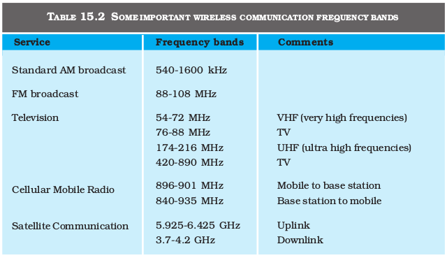
In communication using radio waves, an antenna at the transmitter radiates the Electromagnetic waves (em waves), which travel through the space and reach the receiving antenna at the other end. As the em wave travels away from the transmitter, the strength of the wave keeps on decreasing. Several factors influence the propagation of em waves and the path they follow. At this point, it is also important to understand the composition of the earth’s atmosphere as it plays a vital role in the propagation of em waves. A brief discussion on some useful layers of the atmosphere is given in Table 15.3.
15.6.1 Ground wave
To radiate signals with high efficiency, the antennas should have a size comparable to the wavelength 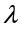 of the signal (at least ~ λ/4). At longer wavelengths (i.e., at lower frequencies), the antennas have large physical size and they are located on or very near to the ground. In standard AM broadcast, ground based vertical towers are generally used as transmitting antennas. For such antennas, ground has a strong influence on the propagation of the signal. The mode of propagation is called surface wave propagation and the wave glides over the surface of the earth. A wave induces current in the ground over which it passes and it is attenuated as a result of absorption of energy by the earth. The attenuation of surface waves increases very rapidly with increase in frequency. The maximum range of coverage depends on the transmitted power and frequency (less than a few MHz).
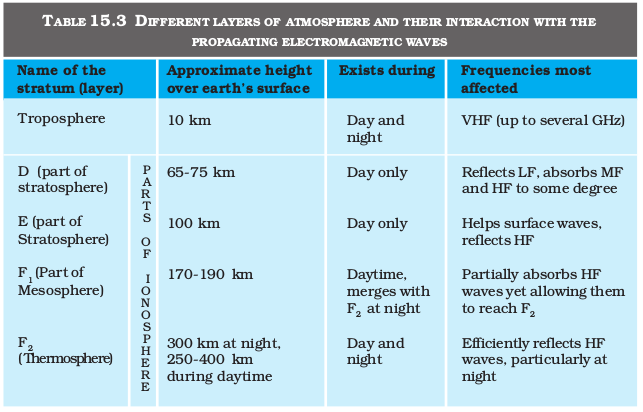
In the frequency range from a few MHz up to 30 to 40 MHz, long distance communication can be achieved by ionospheric reflection of radio waves back towards the earth. This mode of propagation is called sky wave propagation and is used by short wave broadcast services. The ionosphere is so called because of the presence of a large number of ions or charged particles. It extends from a height of ~ 65 Km to about 400 Km above the earth’s surface. Ionisation occurs due to the absorption of the ultraviolet and other high-energy radiation coming from the sun by air molecules. The ionosphere is further subdivided into several layers, the details of which are given in Table 15.3. The degree of ionisation varies with the height. The density of atmosphere decreases with height. At great heights the solar radiation is intense but there are few molecules to be ionised. Close to the earth, even though the molecular concentration is very high, the radiation intensity is low so that the ionisation is again low. However, at some intermediate heights, there occurs a peak of ionisation density. The ionospheric layer acts as a reflector for a certain range of frequencies (3 to 30 MHz). Electromagnetic waves of frequencies higher than 30 MHz penetrate the ionosphere and escape. These phenomena are shown in the Fig. 15.4. The phenomenon of bending of em waves so that they are diverted towards the earth is similar to total internal reflection in optics*.
* Compare this with the phenomenon of mirage.
Another mode of radio wave propagation is by space waves. A space wave travels in a straight line from transmitting antenna to the receiving antenna. Space waves are used for line-of-sight (LOS) communication as well as satellite communication. At frequencies above 40 MHz, communication is essentially limited to line-of-sight paths. At these frequencies, the antennas are relatively smaller and can be placed at heights of many wavelengths above the ground. Because of line-of-sight nature of propagation, direct waves get blocked at some point by the curvature of the earth as illustrated in Fig. 15.5. If the signal is to be received beyond the horizon then the receiving antenna must be high enough to intercept the line-of-sight waves.
If the transmitting antenna is at a height hT, then you can show that the distance to the horizon dT is given as 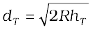, where R is the radius of the earth (approximately 6400 km). dT is also called the radio horizon of the transmitting antenna. With reference to Fig. 15.5 the maximum line-of-sight distance dM between the two antennas having heights hT and hR above the earth is given by
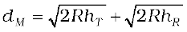 (15.1)
where hR is the height of receiving antenna.
Television broadcast, microwave links and satellite communication are some examples of communication systems that use space wave mode of propagation. Figure 15.6 summarises the various modes of wave propagation discussed so far.
Example 15.1 A transmitting antenna at the top of a tower has a height 32 m and the height of the receiving antenna is 50 m. What is the maximum distance between them for satisfactory communication in LOS mode? Given radius of earth 6.4 × 106 m.
Solution

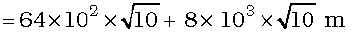
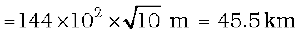
As already mentioned, the purpose of a communication system is to transmit information or message signals. Message signals are also called baseband signals, which essentially designate the band of frequencies representing the original signal, as delivered by the source of information. No signal, in general, is a single frequency sinusoid, but it spreads over a range of frequencies called the signal bandwidth. Suppose we wish to transmit an electronic signal in the audio frequency (AF) range (baseband signal frequency less than 20 kHz) over a long distance directly. Let us find what factors prevent us from doing so and how we overcome these factors,
For transmitting a signal, we need an antenna or an aerial. This antenna should have a size comparable to the wavelength of the signal (at least λ/4 in dimension) so that the antenna properly senses the time variation of the signal. For an electromagnetic wave of frequency 20 kHz, the wavelength λ is 15 km. Obviously, such a long antenna is not possible to construct and operate. Hence direct transmission of such baseband signals is not practical. We can obtain transmission with reasonable antenna lengths if transmission frequency is high (for example, if ν is 1 MHz, then λ is 300 m). Therefore, there is a need of translating the information contained in our original low frequency baseband signal into high or radio frequencies before transmission.
A theoretical study of radiation from a linear antenna (length l) shows that the power radiated is proportional to (l/λ)2 . This implies that for the same antenna length, the power radiated increases with decreasing λ, i.e., increasing frequency. Hence, the effective power radiated by a long wavelength baseband signal would be small. For a good transmission, we need high powers and hence this also points out to the need of using high frequency transmission.
Figure 15.7 (a) Sinusoidal, and (b) pulse shaped signals.
Another important argument against transmitting baseband signals directly is more practical in nature. Suppose many people are talking at the same time or many transmitters are transmitting baseband information signals simultaneously. All these signals will get mixed up and there is no simple way to distinguish between them. This points out towards a possible solution by using communication at high frequencies and allotting a band of frequencies to each message signal for its transmission.
The above arguments suggest that there is a need for translating the original low frequency baseband message or information signal into high frequency wave before transmission such that the translated signal continues to possess the information contained in the original signal. In doing so, we take the help of a high frequency signal, known as the carrier wave, and a process known as modulation which attaches information to it. The carrier wave may be continuous (sinusoidal) or in the form of pulses as shown in Fig. 15.7.
A sinusoidal carrier wave can be represented as
c(t) = Ac sin (ωct + φ) (15.2)
where c(t) is the signal strength (voltage or current), Ac is the amplitude, ωc ( = 2πνc) is the angular frequency and φ is the initial phase of the carrier wave. During the process of modulation, any of the three parameters, viz Ac, ωc and φ, of the carrier wave can be controlled by the message or information signal. This results in three types of modulation: (i) Amplitude modulation (AM), (ii) Frequency modulation (FM) and
(iii) Phase modulation (PM), as shown in Fig. 15.8.
Figure 15.8 Modulation of a carrier wave: (a) a sinusoidal carrier wave; (b) a modulating signal; (c) amplitude modulation; (d) frequency modulation; and (e) phase modulation.
Similarly, the significant characteristics of a pulse are: pulse amplitude, pulse duration or pulse Width, and pulse position (denoting the time of rise or fall of the pulse amplitude) as shown in Fig. 15.7(b). Hence, different types of pulse modulation are: (a) pulse amplitude modulation (PAM), (b) pulse duration modulation (PDM) or pulse width modulation (PWM), and (c) pulse position modulation (PPM). In this chapter, we shall confine to amplitude modulation on ly.

Modulation and Demodulation
http://iitg.vlab.co.in/?sub=59&brch=163&sim=259&cnt=358
In amplitude modulation the amplitude of the carrier is varied in accordance with the information signal. Here we explain amplitude modulation process using a sinusoidal signal as the modulating signal.
Let c(t) = Ac sin ωct represent carrier wave and m(t) = Am sin ωmt represent the message or the modulating signal where ωm = 2πfm is the angular frequency of the message signal. The modulated signal cm (t) can be written as
cm (t) = (Ac + Am sin ωmt) sin ωct
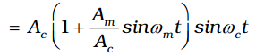 (15.3)
Note that the modulated signal now contains the message signal. This can also be seen from Fig. 15.8(c). From Eq. (15.3), we can write,
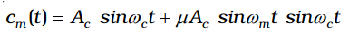 (15.4)
Here µ = Am/Ac is the modulation index; in practice,µ is kept 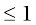 to avoid distortion.
Using the trignomatric relation sinA sinB = ½ (cos(A – B) – cos (A + B), we can write cm (t) of Eq. (15.4) as
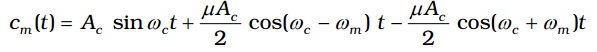 (15.5)
Here ωc – ωm and ωc + ωm are respectively called the lower side and upper side frequencies. The modulated signal now consists of the carrier wave of frequency ωc plus two sinusoidal waves each with a frequency slightly different from, known as side bands. The frequency spectrum of the amplitude modulated signal is shown in Fig. 15.9.
As long as the broadcast frequencies (carrier waves) are sufficiently spaced out so that sidebands do not overlap, different stations can operate without interfering with each other.
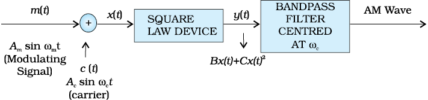
Figure 15.10 Block diagram of a simple modulator for obtaining an AM signal.
Example 15.2 A message signal of frequency 10 kHz and peak voltage of 10 volts is used to modulate a carrier of frequency 1 MHz and peak voltage of 20 volts. Determine (a) modulation index, (b) the side bands produced.
Solution
(a) Modulation index =10/20 = 0.5
(b) The side bands are at (1000+10 kHz)=1010 kHz and
(1000 –10 kHz) = 990 kHz.
Amplitude modulation can be produced by a variety of methods. A conceptually simple method is shown in the block diagram of Fig. 15.10.
Here the modulating signal Am sin ωmt is added to the carrier signal Ac sin ωct to produce the signal x (t). This signal x (t) = Am sinωmt + Ac sinωct is passed through a square law device which is a non-linear device which produces an output
y (t) = B x (t) + Cx2 (t) (15.6)
where B and C are constants. Thus,
y (t)= BAm sin ωmt + BAc sin ωct
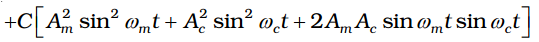 (15.7)
= BAm sin ωmt + BAc sin ωct
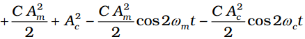
+ CAmAc cos (ωc – ωm) t – CAmAc cos (ωc+ ωm) t (15.8)
where the trigonometric relations sin2A = (1 – cos2A)/2 and the relation for sinA sinB mentioned earlier are used.
Figure 15.11 Block diagram of a transmitter.
In Eq. (15.8), there is a dc term C/2 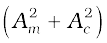 and sinusoids of frequencies ωm, 2ωm, ωc, 2ωc, ωc – ωm and ωc + ωm. As shown in Fig. 15.10 this signal is passed through a band pass filter* which rejects dc and the sinusoids of frequencies ωm , 2ωm and 2 ωc and retains the frequencies ωc, ωc – ωm and ωc + ωm. The output of the band pass filter therefore is of the same form as Eq. (15.5) and is therefore an AM wave.
It is to be mentioned that the modulated signal cannot be transmitted as such. The modulator is to be followed by a power amplifier which provides the necessary power and then the modulated signal is fed to an antenna of appropriate size for radiation as shown in Fig. 15.11.
* A band pass filter rejects low and high frequencies and allows a band of frequencies to pass through.
The transmitted message gets attenuated in propagating through the channel.
Figure 15.12 Block diagram of a receiver.
The receiving antenna is therefore to be followed by an amplifier and a detector. In addition, to facilitate further processing, the carrier frequency is usually changed to a lower frequency by what is called an intermediate frequency (IF) stage preceding the detection. The detected signal may not be strong enough to be made use of and hence is required to be amplified. A block diagram of a typical receiver is shown in Fig. 15.12
Detection is the process of recovering the modulating signal from the modulated carrier wave. We just saw that the modulated carrier wave contains the frequencies ωc and ωc ± ωm. In order to obtain the original message signal m(t) of angular frequency ωm, a simple method is shown in the form of a block diagram in Fig. 15.13.
The modulated signal of the form given in (a) of fig. 15.13 is passed through a rectifier to produce the output shown in (b). This envelope of signal (b) is the message signal. In order to retrieve m(t), the signal is passed through an envelope detector (which may consist of a simple RC circuit).
In the present chapter we have discussed some basic concepts of communication and communication systems. We have also discussed one specific type of analog modulation namely Amplitude Modulation (AM). Other forms of modulation and digital communication systems play an important role in modern communication. These and other exciting developments are taking place everyday.
So far we have restricted our discussion to some basic communication systems. Before we conclude this chapter, it is worth taking a glance at some of the communication systems (see the box) that in recent times have brought major changes in the way we exchange information even in our day-to-day life:
ADDITIONAL INFORMATION
The Internet
It is a system with billions of users worldwide. It permits communication and sharing of all types of information between any two or more computers connected through a large and complex network. It was started in 1960’s and opened for public use in 1990’s. With the passage of time it has witnessed tremendous growth and it is still expanding its reach. Its applications include
(i) E mail – It permits exchange of text/graphic material using email software. We can write a letter and send it to the recipient through ISP’s (Internet Service Providers) who work like the dispatching and receiving post offices.
(ii) File transfer – A FTP (File Transfer Programmes) allows transfer of files/software from one computer to another connected to the Internet.
(iii) World Wide Web (WWW) – Computers that store specific information for sharing with others provide websites either directly or through web service providers. Government departments, companies, NGO’s (Non-Government Organisations) and individuals can post information about their activities for restricted or free use on their websites. This information becomes accessible to the users. Several search engines like Google, Yahoo! etc. help us in finding information by listing the related websites. Hypertext is a powerful feature of the web that automatically links relevant information from one page on the web to another using HTML (hypertext markup language).
(iv) E-commerce – Use of the Internet to promote business using electronic means such as using credit cards is called E-commerce. Customers view images and receive all the information about various products or services of companies through their websites. They can do on-line shopping from home/office. Goods are dispatched or services are provided by the company through mail/courier.
(v) Chat – Real time conversation among people with common interests through typed messages is called chat. Everyone belonging to the chat group gets the message instantaneously and can respond rapidly.
Facsimile (FAX)
It scans the contents of a document (as an image, not text) to create electronic signals. These signals are then sent to the destination (another FAX machine) in an orderly manner using telephone lines. At the destination, the signals are reconverted into a replica of the original document. Note that FAX provides image of a static document unlike the image provided by television of objects that might be dynamic.
Mobile telephony
The concept of mobile telephony was developed first in 1970’s and it was fully implemented in the following decade. The central concept of this system is to divide the service area into a suitable number of cells centred on an office called MTSO (Mobile Telephone Switching Office). Each cell contains a low-power transmitter called a base station and caters to a large number of mobile receivers (popularly called cell phones). Each cell could have a service area of a few square kilometers or even less depending upon the number of customers. When a mobile receiver crosses the coverage area of one base station, it is necessary for the mobile user to be transferred to another base station. This procedure is called handover or handoff. This process is carried out very rapidly, to the extent that the consumer does not even notice it. Mobile telephones operate typically in the UHF range of frequencies (about 800-950 MHz).
SUMMARY
1. Electronic communication refers to the faithful transfer of information or message (available in the form of electrical voltage and current) from one point to another point.
2. Transmitter, transmission channel and receiver are three basic units of a communication system.
3. Two important forms of communication system are: Analog and Digital. The information to be transmitted is generally in continuous waveform for the former while for the latter it has only discrete or quantised levels.
4. Every message signal occupies a range of frequencies. The bandwidth of a message signal refers to the band of frequencies, which are necessary for satisfactory transmission of the information contained in the signal. Similarly, any practical communication system permits transmission of a range of frequencies only, which is referred to as the bandwidth of the system.
5. Low frequencies cannot be transmitted to long distances. Therefore, they are superimposed on a high frequency carrier signal by a process known as modulation.
6. In modulation, some characteristic of the carrier signal like amplitude, frequency or phase varies in accordance with the modulating or message signal. Correspondingly, they are called Amplitude Modulated (AM), Frequency Modulated (FM) or Phase Modulated (PM) waves.
7. Pulse modulation could be classified as: Pulse Amplitude Modulation (PAM), Pulse Duration Modulation (PDM) or Pulse Width Modulation (PWM) and Pulse Position Modulation (PPM).
8. For transmission over long distances, signals are radiated into space using devices called antennas. The radiated signals propagate as electromagnetic waves and the mode of propagation is influenced by the presence of the earth and its atmosphere. Near the surface of the earth, electromagnetic waves propagate as surface waves. Surface wave propagation is useful up to a few MHz frequencies.
9. Long distance communication between two points on the earth is achieved through reflection of electromagnetic waves by ionosphere. Such waves are called sky waves. Sky wave propagation takes place up to frequency of about 30 MHz. Above this frequency, electromagnetic waves essentially propagate as space waves. Space waves are used for line-of-sight communication and satellite communication.
10. If an antenna radiates electromagnetic waves from a height hT, then the range dT is given by  where R is the radius of the earth.
where R is the radius of the earth.
11. Amplitude modulated signal contains frequencies 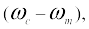 ωc and 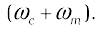
12. Amplitude modulated waves can be produced by application of the message signal and the carrier wave to a non-linear device, followed by a band pass filter.
13. AM detection, which is the process of recovering the modulating signal from an AM waveform, is carried out using a rectifier and an envelope detector.
Points to Ponder
1. In the process of transmission of message/ information signal, noise gets added to the signal anywhere between the information source and the receiving end. Can you think of some sources of noise?
2. In the process of modulation, new frequencies called sidebands are generated on either side (higher and lower than the carrier frequency) of the carrier by an amount equal to the highest modulating frequency. Is it possible to retrieve the message by transmitting (a) only the side bands, (b) only one side band?
3. In amplitude modulation, modulation index µ ≤ 1 is used. What will happen if µ > 1?
EXERCISES
15.1 Which of the following frequencies will be suitable for beyond-the-horizon communication using sky waves?
(a) 10 kHz
(b) 10 MHz
(c) 1 GHz
(d) 1000 GHz
15.2 Frequencies in the UHF range normally propagate by means of:
(a) Ground waves.
(b) Sky waves.
(c) Surface waves.
(d) Space waves.
15.3 Digital signals
(i) do not provide a continuous set of values,
(ii) represent values as discrete steps,
(iii) can utilize binary system, and
(iv) can utilize decimal as well as binary systems.
Which of the above statements are true?
(a) (i) and (ii) only
(b) (ii) and (iii) only
(c) (i), (ii) and (iii) but not (iv)
(d) All of (i), (ii), (iii) and (iv).
15.4 Is it necessary for a transmitting antenna to be at the same height as that of the receiving antenna for line-of-sight communication? A TV transmitting antenna is 81m tall. How much service area can it cover if the receiving antenna is at the ground level?
15.5 A carrier wave of peak voltage 12V is used to transmit a message signal. What should be the peak voltage of the modulating signal in order to have a modulation index of 75%?
15.6 A modulating signal is a square wave, as shown in Fig. 15.14.
Figure 15.14
The carrier wave is given by 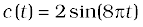volts.
(i) Sketch the amplitude modulated waveform
(ii) What is the modulation index?
15.7 For an amplitude modulated wave, the maximum amplitude is found to be 10V while the minimum amplitude is found to be 2V. Determine the modulation index, µ.
What would be the value of µ if the minimum amplitude is zero volt?
15.8 Due to economic reasons, only the upper sideband of an AM wave is transmitted, but at the receiving station, there is a facility for generating the carrier. Show that if a device is available which can multiply two signals, then it is possible to recover the modulating signal at the receiver station.